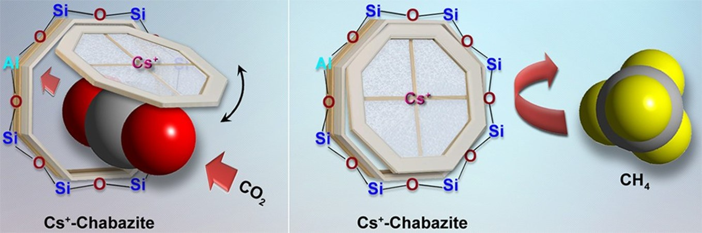

The Shang Adsorption and Separation Lab

2024
- Liu, R., Wu, H., Chung, H. Y., Utomo, W. P., Tian, Y., Shang, J., Sit, P. H., Ng, Y. H.*, Incorporating Zinc Metal Sites in Aluminum-Coordinated Porphyrin Metal-Organic Frameworks for Enhanced Photocatalytic Nitrogen Reduction to Ammonia. Small 2024, in print.
- Zhou Y., Cao X., Shang J., Sundmacher K., Zhou T.*, Multiscale screening of metal-organic frameworks for one-step ethylene purification in pressure-swing adsorption processes. AIChE Journal 2024, xx, e18544.
- Tian, Y., Tao, Z., Sun, M., Wang, T., Li, L., Gu, Q., Shang, J.*, Tunable Gas Admission via a “Molecular Trapdoor” Mechanism in a Flexible Cationic Metal–Organic Framework Featuring 1D Channels. Small 2024, 20, 2400064. Journal back cover
- Tian, Y., Tao, Z., Liu, C., Sun, M., Chang C., Gu, Q., Li, L., Shang, J.*, Adjusting gate-opening behavior in a rigid cage-type “molecular trapdoor” metal-organic framework via anion modulation. Chemical Engineering Journal 2024, 486, 150293.
- Wu, C.,* …, Shang J. et al., A comprehensive review of carbon capture science and technologies. Carbon Capture Science & Technology 2024, 11, 100178.
- Jan T., Raheem S., Hanif A., Rydzek G., Peerzada G.M., Ariga K., Shang J., Rizvi M.A.*, Adsorptive Avidity of Prussian blue Polypyrrole Nanocomposite for Elimination of Water Contaminants: A Case study of Malachite Green and Isoniazid. Physical Chemistry Chemical Physics 2024, 26, 16802.
- Tao, Z., Tian, Y., Wu, W., Liu, Z., Fu. W., Kung, C.W., Shang J.*, Development of zeolite adsorbents for CO2 separation in achieving carbon neutrality. Npj materials sustainability 2024, 2, article number 20.
2023
- Shang S., Tian Y., Yang C., Wang C., Chen X., Ye D., Shang J.*, Ambient temperature NO2 removal by adsorption on robust DMOFs: regulating water stability, acid stability, and NO2 capacity by methyl functionalization. Chemical Engineering Journal 2023, 477, 147255.
- Tao, Z., Tian, Y., Ou, S.Y., Gu, Q., Shang J.*, Direct air capture of CO2 by metal cation-exchanged LTA zeolites: effect of the charge-to-size ratio of cations”. AIChE Journal 2023, 69(8), e18139. Editor’s choice
- Tao, Z., Tian, Y., Hanif, A., Chan, V., Gu, Q., Shang J.*, Metal cation-exchanged LTA zeolites for CO2/N2 and CO2/CH4 separation: The roles of gas-framework and gas-cation interactions. Carbon Capture Science & Technology 2023, 8, 100126. Journal inside front cover
- Yang, J., Dehdari, L., Guo, Y., Guo, J., Singh, R., Xiao, P., Shang, J.,* Zavabeti, A.,* Li, K.*, Hydrogen capture using zeolite 3A for pipeline gas deblending. Chemical Engineering Journal 2023, 466, 143224.
- Abid, H.R.*, Aamir H., Keshavarz A., Shang J.*, Iglauer S., CO2, CH4, and H2 Adsorption Performance of the Metal–Organic Framework HKUST-1 by Modified Synthesis Strategies. Energy & Fuels 2023, 37, 7260−7267.
- Sun, M., Aamir, H., Wang, T., Gu, Q., Shang, J.*, Ambient temperature NO2 removal by reversible NO2 adsorption on copper-based metal-organic frameworks (MOFs)-derived nanoporous adsorbents. Separation and Purification Technology 2023, 314, 123563.
- Tian, Y., Kong, M., Tao, Z., Yang, C., Shang, S., Gu, Q., Tsang, D.C.W., Li, L., Shang, J.*, Efficient Adsorption Removal of NO2 by Covalent Triazine Frameworks with Fine-Tuned Binding Sites. Journal of Hazardous Materials 2023, 441, 129962.
- Sun, M., Ku, K., Tao, Z., Wang, T., Wen, C., Hanif, A., Wang, C., Gu, Q.*, Sit, P.*, Shang J.*, Ambient Temperature NO2 Removal by Adsorption on Transition Metal Ion-exchanged Chabazite Zeolites. Results in Engineering 2023, 18, 101134.
- Shang, S., Yang, C., Tian, Y., Tao, Z., Smith, M., Zhang, H., Zhang, L., Li, L., Gu, Q., Zhou, H., Ok, Y.* Shang, J.*, Designing multivariate porphyrin-based metal-organic frameworks with Ni/Co dual-metal atom sites for cooperative NO2 capture and NO retention. Separation and Purification Technology 2023, 320, 124080.
- Shi C., Wang, T., Roy, S., Chopra, S., Chen, G., Shang, J.* Tian, J., Ok. Y., From waste to resource: Surface-engineered spent coffee ground as a sustainable adsorbent for oil–water separation. ACS ES&T Engineering 2023, 3, 9, 1297. Supplementary cover
- Liu, B.,* Lu, W., Liu, Y., Feng, Q., Huang, Y., Shang, J., Zhu, Y., Dong, J., Synthesis of dodecylbenzene via the alkylation of benzene and 1-dodecene over mesopore Beta zeolites. AIChE Journal 2023, 69(11), e18201.
- Huang, Y., Wang, M., Huang, Y., Shang, J., Liu, B.*, Mesoporous Beta Zeolites with Controlled Distribution of Brønsted Acid Sites for Alkylation of Benzene with Cyclohexene. Results in Engineering 2023, 19, 101377.
- Bai, S., Tian, Y., Zeng, Y., Chao, L.C., Pan, A., Ho, T.C., Chen, S., Shang, J., Tso, C.Y.*, Adsorption-based Atmospheric Water Harvesting by Passive Radiative Condensers for Continuous Decentralized Water Production. Applied Thermal Engineering 2023, 225, 120163.
- Xiong, F., Ji, C., Gan, S., Liang, P., Huang, Y., Shang, J., Liu, B.,* Dong, J., Tuning the mesoscopically structured ZSM-5 nanosheets for the alkylation between toluene and methanol. AIChE Journal 2023, 69 (6), e18054.
- Tian, Y., Wu, H., Hanif, A., Niu, Y., Yin, Y., Gu, Y., Chen, Z., Gu, Q., Ng, Y.H.*, Shang, J.*, Li, L.*, Liu, M., N-doped graphitic carbon encapsulating cobalt nanoparticles derived from novel metal-organic frameworks for electrocatalytic oxygen evolution reaction. Chinese Chemical Letters 2023, 34(8), 108056.
2022
- Shang, S., Yang, C., Sun, M., Tao, Z., Hanif A., Gu, Q., Shang, J.*, CO2 capture from wet flue gas using transition metal inserted porphyrin-based metal-organic frameworks as efficient adsorbents. Separation and Purification Technology 2022, 301, 122058.
- Igalavithana, A. D., You, S., Zhang, L., Shang, J., Lehmann, J., Wang, X., Zhu, Y.-G., Tsang, D. C.W., Park, Y.-K., Hou, D., Ok, Y. S., Progress, barriers, and prospects for achieving a hydrogen society and opportunities for biochar technology. ACS ES&T Engineering 2022, 2 (11), 1987.
- Liu, Y., Yang, D., Shang J., Zhou J., Chang, V., Direct Decomposition of NO over 8MR in High Silica Cu-LTA Zeolite: A DFT Study on Reaction Mechanisms, Thermodynamics and Kinetics. Molecular Catalysis 2022, 530, 112602.
- Fang, L., Gou, G., Shang, J., Liu, M., Gu, Q., Li, L.*, Regulating the Spin State of Single-Atom Doped Covalent Triazine Frameworks for Efficient Nitrogen Fixation. Journal of Colloid and Interface Science 2022, 627, 931.
- Tang, Z., Ma, D., Chen, Q., Wang, Y., Sun, M., Lian, Q., Shang, J., Wong, P.K., He, C., Xia, D., Wang, T.*, Nanomaterial-Enabled Photothermal-Based Solar Water Disinfection Processes: Fundamentals, Recent Advances, and Mechanisms. Journal of Hazardous Materials 2022, 437, 129373.
- Sun, M., Zhu, X., Wu, C., Masek, O., Wang, C.-H., Shang, J., Ok, Y.S., Tsang, D.C.W.*, Customizing high-performance molten salt induced biochar from biomass waste for CO2/N2 separation. Fuel Processing Technology 2022, 234, 107319.
- Wu, H., Utomo, W.P., Tian, Y., Mak, C.H., Chung, H.Y., Hsu, H.Y., Shang, J., Ng, Y.H.*, Enhanced Visible-light-driven Heterogeneous Photocatalytic CO2 Methanation by Cu2O@Cu-MOF-74 Thin Film. ChemPhysMater 2022, 2(2), 126.
- Xia D., Chen Q., Jiao Y., Lian Q., Sun M., He C., Shang J.*, Wang T., A Modified Flower Pollen-based Photothermocatalytic Process for Enhanced Solar Water Disinfection: Photoelectric effect and Bactericidal Mechanisms. Water Research 2022, 217, 118423.
- Yang, C., Shang, S., Gu, Q., Shang, J., Li, X.*, Metal-organic framework-derived carbon nanotubes with multi-active Fe-N/Fe sites as a bifunctional electrocatalyst for zinc-air battery. Journal of Energy Chemistry 2022, 66, 306.
2021
- Shang, S., Wen, C., Yang, C., Tian, Y., Wang, C., Shang, J.*, The low-temperature NO2 removal by tailoring metal node in porphyrin-based metal-organic frameworks. Science of The Total Environment 2021, 801, 149710.
- Shang, S., Xiong, W., Yang, C., Johannessen, B., Liu, R., Hsu, H., Gu, Q., Leung, M., Shang, J.*, Atomically Dispersed Iron Metal Site in a Porphyrin-Based Metal-Organic Framework for Photocatalytic Nitrogen Fixation. ACS Nano 2021, 15(6), 9670.
- Shang, S., Yang, C., Tian, Y., Tao, Z., Hanif, A., Sun, M., Wong, S., Wang, C., Shang, J.*, NO2 Removal by Adsorption on Transition-Metal-Based Layered Double Hydroxides. ACS ES&T Engineering 2021, 1(3), 375.
- Hanif, A., Sun, M., Wang, T., Shang, S., Tsang, D.C.W., Shang, J.*, Ambient NO2 Adsorption Removal by Mg-Al Layered Double Hydroxides and Derived Mixed Metal Oxides. Journal of Cleaner Production 2021, 313, 127956.
- Sun, M., Hanif, A., Wang, T., Yang, C., Tsang, D.C.W., Shang, J.*, Chrysanthemum flower like silica with highly dispersed Cu nanoparticles as a high-performance NO2 adsorbent. Journal of Hazardous Materials 2021, 418, 126400.
- He, J., Mousavi, S., Li, G., Li, Z., Mokarizadeh, A., Shang, J., May, E.F., Li, G.*, The rational design of Li-doped nitrogen adsorbents for natural gas purification. Physical Chemistry Chemical Physics 2021, 23, 971.
- Wang, T., Dissanayake, P., Sun, M., Tao, Z., Han, W., An, N., Gu, Q., Xia, D., Tian, B., OK, Y., Shang, J.*, Adsorption and visible-light photocatalytic degradation of organic pollutants by functionalized biochar: Role of iodine doping and reactive species. Environmental Research 2021, 197, 111026.
- Guo, J., Hanif, A., Shang, J.,* Deka, B., Ning, Z., An, A., PAA@ZIF-8 incorporated nanofibrous membrane for high-efficiency PM2.5 capture. Chemical Engineering Journal 2021, 405, 126584.
- Wang, C.,# Shang, J.,# Tian, L., Zhao, H., Wang, P., Feng, K., He, G., Liu, J.Z., Zhu, W., Li, G.*, Direct Identification of HMX via Guest-induced Fluorescence Turn-on of Molecular Cage. Chinese Chemical Letters 2021, 32, 4006. #co-first authors
- Wang, T., Tian, B., Han, B., Ma, D., Sun, M., Hanif, A., Xia, D. and Shang, J.*, Recent advances on porous materials for synergetic adsorption and photocatalysis. Energy & Environmental Materials 2021,5, 711.
- Li, Y., Shang, S., Shang, J., Wang, W.*, Toxicity assessment and underlying mechanisms of multiple metal organic frameworks using the green algae Chlamydomonas reinhardtii model. Environmental Pollution 2021, 291, 118199.
- Peng, Y., Sun, Y., Hanif, A., Shang, J., Shen, Z., Hou, D., Zhou, Y., Chen, Q., Ok, Y., Tsang, D.C.W.*, Design and fabrication of exfoliated Mg/Al layered double hydroxides on biochar support. Journal of Cleaner Production 2021, 289, 125142.
- Zhu, X., Wan, Z., Tsang, D.C.W.,* He, M., Hou, D., Su, Z., Shang, J., Machine learning for the selection of carbon-based materials for tetracycline and sulfamethoxazole adsorption. Chemical Engineering Journal 2021, 406, 126782.
- Yang, Z., Gu, Y., Yuan, B., Tian, Y., Shang, J., Tsang, D.C.W., Liu, M., Gan, L., Mao, S., Li L.*, Thio-groups decorated covalent triazine frameworks for selective mercury removal. Journal of Hazardous Materials 2021, 403, 123702.
2020
- Shang, S., Yang, C., Wang, C., Qin, J., Li, Y., Gu, Q., Shang, J.*, Transition-Metal-Containing Porphyrin Metal–Organic Frameworks as π-Backbonding Adsorbents for NO2 Removal. Angewandte Chemie International Edition 2020, 59 (44), 19680.
- Shang, S., Tao, Z., Yang, C., Hanif, A., Li, L., Tsang, D.C.W., Gu, Q., Shang, J.*, Facile synthesis of CuBTC and its graphene oxide composites as efficient adsorbents for CO2 capture. Chemical Engineering Journal 2020, 393, 124666.
- Shang, J.,* Hanif, A., Li, G., Xiao, G., Liu, J. Z., Xiao, P., Webley, P.A., Separation of CO2 and CH4 by Pressure Swing Adsorption Using a Molecular Trapdoor Chabazite Adsorbent for Natural Gas Purification. Industrial & Engineering Chemistry Research 2020, 59 (16), 7857-7865.
- Wang, T., Wang, Y., Sun, M., Hanif, A., Wu, H., Gu, Q., Ok, Y., Tsang, D.C.W., Li, J., Yu, J., Shang, J.*, Thermally Treated Zeolitic Imidazolate Framework-8 (ZIF-8) for Visible Light Photocatalytic Degradation of Gaseous Formaldehyde. Chemical Science 2020, 11, 6670-6681. Journal back cover
- Zhu, X., Tsang, D.C.W., Wang, L., Su, Z., Hou, D., Li, L., Shang, J.*, Machine learning exploration of the critical factors for CO2 adsorption capacity on porous carbon materials at different pressures. Journal of Cleaner Production 2020, 273, 122915.
- Wang, Z., Goyal, N., Liu, L., Tsang, D.C.W., Shang J., Liu, W., Li, G.*, N-doped porous carbon derived from polypyrrole for CO2 capture from humid flue gases. Chemical Engineering Journal 2020, 396, 125376.
- Igalavithana, A., Choi, S., Dissanayake, P., Shang, J., Wang, C., Yang, X., Kim, S., Tsang, D.C.W., Lee, K., Ok, Y.*, Gasification biochar from biowaste (food waste and wood waste) for effective CO2 adsorption. Journal of Hazardous Materials 2020, 39,121147.
- Li, J., Zhang, H., Wang, B., Yu, X., Shang, J., Yu, J.*, Carbon Dots in Porous Materials: Host‐Guest Synergy for Enhanced Performance. Angewandte Chemie International Edition 2020, 59 (44), 19390.
- Igalavithana, A., Choi, S., Shang, J., Hanif, A., Dissanayake, P., Tsang, D.C.W., Kwon, J., Lee, K., Ok, Y.*, Carbon dioxide capture in biochar produced from pine sawdust and paper mill sludge: Effect of porous structure and surface chemistry. Science of The Total Environment 2020, 739, 139845.
- Tian, M., Liu, S. J., Wang, L., Ding, H., Zhao, D., Wang, Y., Cui, J., Fu, J., Shang, J.,* Li, G., Complete Degradation of Gaseous Methanol over Pt/FeOx Catalysts by Normal Temperature Catalytic Ozonation (NTCO). Environmental Science & Technology 2020, 54(3) 1938-1945.
- Xiao, K.,# Wang, T.,# Sun, M., Hanif, A., Gu, Q., Tian, B., Jiang, Z., Wang. B., Sun, H., Shang, J.,* Wong, P.K.*, Photocatalytic Bacterial Inactivation by a Rape Pollen-MoS2 Biohybrid Catalyst: Synergetic Effects and Inactivation Mechanisms. Environmental Science & Technology 2020, 54(1) 537-549. #co-first authors
- Chen, S., Cao, Y., Tsang, D.C.W., Tessonnier, J., Shang, J., Hou, D., Shen, Z., Zhang, S., Ok, Y., Wu, K.*, Effective Dispersion of MgO Nanostructure on Biochar Support as a Basic Catalyst for Glucose Isomerization. ACS Sustainable Chemistry & Engineering 2020, 8 (18), 6990-7001.
- Yu, I.K.M., Hanif, A., Tsang, D.C.W., Yip, A., Lin, K., Gao, B., Ok, Y., Poon, C.S., Shang, J.*, Tailoring Acidity and Porosity of Alumina Catalysts via Transition Metal Doping for Glucose Conversion in Biorefinery. Science of The Total Environment 2020, 704, 135414.
- Yu, I.K.M., Hanif, A., Tsang, D.C.W., Shang, J.*, Su, Z.; Song, H., Ok, Y., Poon, C.S., Tuneable functionalities in layered double hydroxide catalysts for thermochemical conversion of biomass-derived glucose to fructose. Chemical Engineering Journal, 2020, 383, 122914.
- Cao, L., Yu, I.K.M., Xiong, X., Tsang, D.C.W.,* Zhang, S., Clark, J., Hu, C., Ng, Y., Shang, J., Ok, Y., Biorenewable hydrogen production through biomass gasification: A review and future prospects. Environmental Research 2020, 186, 109547.
- Li, B., Zheng, T., Ran, S., Sun, M., Shang, J., Hu, H., Lee, P., Boles, S.T.*, Performance recovery in degraded carbon-based electrodes for capacitive deionization. Environmental Science & Technology 2020, 54(3), 1848-1856.
- Kumar, P., Kim, K.,* Lee, J., Shang, J., Khazi, M., Kumar, N., Lisak, G., Metal-organic framework for sorptive/catalytic removal and sensing applications against nitroaromatic compounds. Journal of Industrial and Engineering Chemistry 2020, 84, 87-95.
- Zhao, Z., Ling, C., Wang, D., Wang, J., Saczek, J., Pramana, S., Sridhar, S., Shang, J., Xu, B., Tsang, D.C.W., Chen, J., Wang, S.*, Liquid Marbles in Liquid. Small 2020, 16, 2002802.
- Vikrant, K., Kim, K.,* Szulejko, J., Boukhvalov, D., Shang J., Rinklebe, J., Evidence of inter-species swing adsorption between aromatic hydrocarbons. Environmental Research 2020, 181, 108814.
2019
- Sun, M., Gu, Q., Hanif, A., Wang, T., Shang, J.*, Transition metal cation-exchanged SSZ-13 zeolites for CO2 capture and separation from N2. Chemical Engineering Journal 2019, 370, 1450.
- Shang, S., Hanif, A., Sun, M., Tian, Y., Ok, Y., Yu, I.K.M., Tsang, D.C.W., Gu, Q., Shang, J.*, Novel M (Mg/Ni/Cu)-Al-CO3 layered double hydroxides synthesized by aqueous miscible organic solvent treatment (AMOST) method for CO2 capture. Journal of Hazardous Materials 2019, 373, 285-293.
- Hanif, A., Sun, M., Shang, S., Tian, Y., Yip, A., Ok, Y., Yu, I.K.M., Tsang, D.C.W., Gu, Q., Shang, J.*, Exfoliated Ni-Al LDH 2D nanosheets for intermediate temperature CO2 capture. Journal of Hazardous Materials 2019, 374, 365-371.
- Hanif, A., Sun, M., Tao, Z., Liu, L., Tsang, D.C.W., Gu, Q., Shang, J.*, Silica Supported MgO as An Adsorbent for Pre-combustion CO2 Capture. ACS Applied Nano Materials 2019, 2(10), 6565-6574.
- He, Y., Sun, M., Zhao, Q., Shang, J.,* Tian, Y., Xiao, P., Gu, Q., Li, L., Webley, P.A., Effective Gas Separation Performance Enhancement Obtained by Constructing Polymorphous Core-Shell Metal-Organic Frameworks. ACS Applied Materials & Interfaces 2019, 11(33), 30234-30239.
- Wang, S., Bai, P., Sun, M., Liu, W., Li, D., Wu, W., Yan, W., Shang, J.,* Yu, J.*, Fabricating Mechanically Robust Binder-Free Structured Zeolites by 3D Printing Coupled with Zeolite Soldering: A Superior Configuration for CO2 Capture. Advanced Science, 2019, 6(17), 1901317.
- Wang, T., Sun, M., Sun, H., Shang, J.,* Wong P.K.*, Efficient Z-Scheme Visible-Light-Driven Photocatalytic Bacterial Inactivation by Hierarchical MoS2-Encapsulated Hydrothermal Carbonation Carbon Core-Shell Nanospheres. Applied Surface Science 2019, 464, 43-52.
- Tian, Y., Liang, G., Fan, T., Shang, J., Shang, S., Ma, Y., Matsuda, R., Liu, M., Wang, M., Li, L., Kitagawa, S.*, Grafting free carboxylic acid groups onto pore surface of 3D porous coordination polymers for high proton conductivity. Chemistry of Materials 2019, 31(20), 8494-8503.
- Iacomi, P., Formalik, F., Marreiros, J., Shang, J., Rogacka, J., Mohmeyer, A., Behrens, P., Ameloot, R., Kuchta, B., Llewellyn, P.L.*, Role of structural defects in the adsorption and separation of C3 hydrocarbons in Zr-fumarate-MOF (MOF-801). Chemistry of Materials 2019, 31(20), 8413-8423.
- Xiang, H., Ameen, A., Shang, J., Jiao, Y., Gorgojo, P., Siperstein, F., Fan, X.*, Synthesis and modification of moisture-stable coordination pillared-layer metal-organic framework (CPL-MOF) CPL-2 for ethylene/ethane separation. Microporous and Mesoporous Materials 2019, 293, 109784.
- Buruga, K., Song, H., Shang, J., Bolan, N., Jagannathan, T., Kim, K.*, A review on functional polymer-clay based nanocomposite membranes for treatment of water. Journal of Hazardous Materials 2019, 379, 120584.
- Zhu, W., Guo, J., Agola, J., Croissant, J., Wang, Z., Shang, J., Coker, E., Motevalli, B., Zimpel, A., Wuttke, S., Brinker, C.J.*, Metal-Organic Framework Nanoparticle-Assisted Cryopreservation of Red Blood Cells. Journal of the American Chemical Society 2019, 141, 19, 7789-7796.
- Zhu, W., Guo, J., Amini, S., Ju, Y., Agola, J., Zimpel, A., Shang, J., Noureddine, A., Caruso, F., Wuttke, S., Croissant, J., Brinker, C.J.*, SupraCells: Living Mammalian Cells Protected within Functional Modular Nanoparticle-Based Exoskeletons. Advanced Materials 2019, 31(25), 1900545.
- Yin, H., Shang, J., Choi, J., Yip, A.*, Generation and extraction of hydrogen from low-temperature water-gas-shift reaction by a ZIF-8-based membrane reactor. Microporous & Mesoporous Materials 2019, 280, 347-356.
- Yang, X., Yu, I.K.M., Cho, D., Chen, S., Tsang, D.C.W.,* Shang, J., Yip, A., Wang, L., Ok, Y., Tin-functionalized Wood Biochar as a Sustainable Solid Catalyst for Glucose Isomerization in Biorefinery. ACS Sustainable Chemistry & Engineering 2019, 7 (5), 4851-4860.
- Lv, X., Hu, C., Shang, J., Sit, P.H.L., Lam, F. L. Y., Teoh, W.Y*, Enhanced photoelectrochemical charge transfer on Mn-doped CdS/TiO2 nanotube arrays: The roles of organic substrates. Catalysis Today 2019, 355, 468-476.
- Zhu, W., Guo, J., Croissant, J., Shang, J., Agola, J., Ping, Y., Brinker, C.J.*, Modular Metal-Organic Polyhedra Super-Assembly: from Molecular-Level Design to Targeted Drug Delivery. Advanced Materials 2019, 31 (12), 1806774. Journal front cover
- Vellingiri, K., Deng, Y., Kim, K.,* Jiang, J., Kim, T., Shang, J., Ahn, W., Kukkar, D., Boukhvalov, D., Amine-Functionalized Metal–Organic Frameworks and Covalent Organic Polymers as Potential Sorbents for Removal of Formaldehyde in Aqueous Phase: Experimental Versus Theoretical Study. ACS Applied Materials & Interfaces 2019, 11 (1), 1426-1439.
- Lv, X., Rodriguez, I., Hu, C., Shang, J., Sit, P.H.L., Ye, C., Oskam, G., Teoh, W.Y.*, Modulated anodization synthesis of Sn-doped iron oxide with enhanced solar water splitting performance. Materials Today Chemistry 2019, 12, 7-15.
2018
- Gu, Q., Shang, J.,* Hanif A., Li, G., Shirazian, S., Theoretical Study of Moisture-Pretreated Lithium as Potential Materials for Natural Gas Upgrading. Industrial & Engineering Chemistry Research 2018, 57 (45), 15512–15521.
- Shang, J.,* Shirazian, S., Facilitated Dissociation of Water in the Presence of Lithium Metal at Ambient Temperature as a Requisite for Lithium-Gas Reactions. The Journal of Physical Chemistry C 2018, 122, 16016-16022.
- Rada, Z., Abid, H., Sun, H., Shang, J., Li, J., He, Y., Liu, S., Wang, S.*, Effects of -NO2 and -NH2 functional groups in mixed-linker Zr-based MOFs on gas adsorption of CO2 and CH4. Progress in Natural Science: Materials International 2018, 28, 160-167.
- Du, T., Fang, X., Liu, L., Shang, J., Zhang, B., Wei, Y., Gong, H., Rahman, S., May, E.F., Webley, P.A., Li, G.*, An optimal trapdoor zeolite for exclusive admission of CO2 at industrial carbon capture operating temperatures. Chemical Communications 2018, 54 (25), 3134-3137.
- Zhu, W., Xiang, G., Shang, J., Guo, J., Motevalli, B., Durfee, P., Agola, J., Coker, E., Brinker, C.J.*, Versatile Surface Functionalization of Metal–Organic Frameworks through Direct Metal Coordination with a Phenolic Lipid Enables Diverse Applications. Advanced Functional Materials 2018, 28 (16), 1705274.
- Jooshani, S., Khansary, M.,* Marjani, A., Shirazian, S., Shang, J., Contaminant uptake by polymeric passive samplers: A modeling study with experimental validation. Chemical Engineering Research and Design 2018, 129, 231-236.
- Yu, I.K.M., Tsang, D.C.W.,* Su, Z., Yip, A., Shang, J., Ok, Y., Kim, K., Poon, C.S., Contrasting Roles of Maleic Acid in Controlling Kinetics and Selectivity of Sn(IV)- and Cr(III)-catalyzed Hydroxymethylfurfural (HMF) Synthesis. ACS Sustainable Chemistry & Engineering 2018, 6 (11), 14264-14274.
- Yu, I.K.M., Xiong, X., Tsang, D.C.W.,* Wang, L., Hunt, A., Song, H., Shang, J., Ok, Y., and Poon, C.S., Aluminium-Biochar Composites as Sustainable Heterogeneous Catalysts for Glucose Isomerisation in a Biorefinery. Green Chemistry 2019, 21, 1267-1281. Journal front cover
- Yu, I.K.M., Tsang, D.C.W.,* Yip, A., Hunt, A., Sherwood, J., Shang, J., Song, H., Ok, Y., Poon, C. S., Propylene Carbonate and [gamma]-Valerolactone as Green Solvents Enhance Sn(IV)-Catalysed Hydroxymethylfurfural (HMF) Production from Bread Waste. Green Chemistry 2018, 20, 2064-2074.
2017
- Li, G.,# Shang, J.,# Gu, Q., Awati, R., Grant, A., Jensen, N., Zhang, X., Sholl, D.S., Liu, J.Z., Webley, P.A., May, E.F.*, Temperature-Regulated Guest Admission and Release in Microporous Materials. Nature Communications 2017, (8), 15777. #co-first authors
- Du, T., Fang, X., Wei, Y., Shang, J., Zhang, B., Liu, L.*, Synthesis of Nanocontainer Chabazites from Fly Ash with a Template- and Fluoride-Free Process for Cesium Ion Adsorption. Energy & Fuels 2017, 31 (4), 4301-4307.
- Cao, A., Zhu, W., Shang, J., Klootwijk, J., Sudhölter, E., Huskens, J., de Smet, L.C.P.M.*, Metal-Organic Polyhedra-Coated Si Nanowires for Sensitive Detection of Trace Explosives. Nano Letters 2017, 17, 1-7. Journal front cover
- Perre, S., Gelin, P., Claessens, B., Calvo, A., Cousin, J., Remi, S., Duerinck, T., Baron, G., Palomino, M., Sánchez, L., Valencia, S., Shang, J., Singh, R., Webley, P.A., Rey, F., Denayera, J.F.M.*, Intensified biobutanol recovery using zeolites with complementary selectivity. ChemSusChem 2017, 10, 2968-2977.
- Xie, K., He, Y., Zhao, Q., Shang, J., Gu, Q., Qiao, G., Webley P.A.*, Pd(0) loaded Zn2(AzoBDC)2(Dabco) as heterogeneous catalyst. CrystEngComm 2017, 19, 4182-4186.
2016
- He, Y., Shang, J.,* Gu, Q., Zhao, Q., Xie, K., Li, G., Singh, R.K., Xiao, P., Webley, P.A., Exchange Method Using Acid-Solvent Synergy for Metal–Organic Framework Synthesis (EASY-MOFs) Based on a Typical Pillar-Layered Parent Structure. European Journal of Inorganic Chemistry 2016, 1466.
- Shang, J.,* Li, G., Webley, P.A., Liu, J.Z.*, A Density Functional Theory Study for the Adsorption of Various Gases on a Caesium Exchanged Trapdoor Chabazite. Computational Materials Science 2016, 122, 307.
- He, Y., Shang, J.,* Zhao, Q., Gu, Q., Xie, K., Li, G., Singh, R.K., Xiao, P., Webley, P.A., A Comparative Study on Conversion of Porous and Non-porous Metal-Organic Frameworks (MOFs) into Carbon-based Composites for Carbon Dioxide Capture. Polyhedron 2016, 120, 30-35.
- Abid, H., Rada, Z.H., Shang, J.,* Wang, S., Synthesis, Characterization, and CO2 Adsorption Study of three Metal-Organic Frameworks (MOFs): MIL-53, MIL-96, and Amino-MIL-53. Polyhedron 2016, 120, 103-111.
- Xu, D., Sun, L., Li, G., Shang, J., Yang, R., Deng, W.*, Methyllithium-Doped Naphthyl-Containing Conjugated Microporous Polymer with Enhanced Hydrogen Storage Performance. Chemistry - A European Journal 2016, 22, 7944.
- Physick, A., Wales, D., Owens, S., Shang, J., Webley, P.A., Mays, T., Ting, V.P.*, Novel low energy hydrogen-deuterium isotope breakthrough separation using a trapdoor zeolite. Chemical Engineering Journal 2016, 288, 161.
- Rada, Z.H., Abid, H., Shang, J., Sun, H., He, Y., Webley, P.A., Liu, S., Wang, S.*, Functionalised UiO-66 by single and binary (OH)2 and NO2 groups for uptake of CO2 and CH4. Industrial & Engineering Chemistry Research 2016, 55 (29), 7924.
2015
- Shang, J.,* Li, G., Li, J., Li, L., Webley, P.A., Liu, J.Z.*, Density Functional Theory Computational Study of Alkali Cation-Exchanged sod-ZMOF for CO2, N2, and CH4 Adsorption. The Journal of Physical Chemistry C 2015, 119, 27449.
- He, Y., Shang, J.,* Gu, Q., Li, G., Li, J., Singh, R.K., Xiao, P., Webley, P.A., Converting 3D Rigid Metal-Organic Frameworks (MOFs) to 2D Flexible Networks via Linker Exchange for Enhanced CO2/N2 and CH4/N2 Separation. Chemical Communications 2015, 51 (79), 14716. Journal inside back cover
- Wang, C.,# Shang, J.,# Lan, Y., Tian, T., Wang, H., Chen, X., Gu, J., Liu, J.Z., Wan, L., Zhu, W., Li, G.*, Metal-Organic Polyhedra Cages Immobilized on a Plasmonic Substrate for Sensitive Detection of Trace Explosives. Advanced Functional Materials 2015, 25 (37), 6009. #co-first authors
- Rada, Z., Abid, H., Shang, J., He, Y., Webley, P.A., Liu, S., Sun, H., Wang, S.*, Effect of amino functionality on uptake of CO2, CH4 and selectivity of CO2/CH4 on titanium based MOFs. Fuel 2015, 160, 318.
- Chandrakumara, G., Shang, J., Qiu, L., Fang, X., Antolasic, F., Li, D., Alan, T., Liu, J.Z.*, Tuning the oxygen functional groups in reduced graphene oxide papers to enhance the electromechanical actuation. RSC Advances 2015, 5, 68052.
2014
- Shang, J., Li, G., Gu, Q., Singh, R., Xiao, P., Liu, J.Z., Webley, P.A.*, Temperature Controlled Invertible Selectivity of Adsorption of N2 and CH4 by Molecular Trapdoor Chabazites. Chemical Communications 2014, 50 (35), 4544-4546. Journal front cover
- Shang, J., Li, G., Singh, R., Xiao, P., Danaci, D., Liu, J.Z., Webley, P.A.*, Adsorption of CO2, N2, and CH4 in Cs-exchanged chabazite: A combination of van der Waals density functional theory calculations and experiment study. The Journal of Chemical Physics 2014, 140, 084705.
- Remy, T., Gobechiya, E., Danaci, D., Peter, S., Xiao, P., Tendeloo, L., Couck, S., Shang, J., Kirschhock, C., Singh, R., Martens, J., Baron, G., Webley, P.A., Denayer, J.F.M.*, Biogas upgrading through kinetic separation of carbon dioxide and methane over Rb- and Cs-ZK-5 zeolites. RSC Advances 2014, 4, 62511.
- Chang, Z., Yan, W., Shang, J., Liu, J.Z.*, Piezoelectric properties of graphene oxide: a first-principles computational study. Applied Physics Letters 2014, 105, 023103.
2013
- Shang, J., Li, G., Singh, R., Xiao, P., Liu, J.Z., Webley, P.A.*, Determination of Composition Range for Molecular Trapdoor Effect in Chabazite Zeolite. The Journal of Physical Chemistry C 2013, 117, 12841-12847.
- Li, L., Yao, J., Xiao, P., Shang, J., Feng, Y., Webley, P.A., Wang, H.*, One-step fabrication of ZIF-8/polymer composite spheres by a phase inversion method for gas adsorption. Colloid and Polymer Science 2013, 291, 2711-2717.
- Abid, H., Shang, J., Ang, H., Wang, S.*, Amino-Functionalised Zr-MOF Nanoparticle for Adsorption of CO2 and CH4. International Journal of Smart and Nano Materials 2013, 4, 72-82.
2012
- Shang, J., Li, G., Singh, R., Gu, Q., Nairn, K., Bastow, T., Medhekar, N., Doherty, C., Hill, A., Liu, J.Z., Webley, P.A.*, Discriminative Separation of Gases by a “Molecular Trapdoor” Mechanism in Chabazite Zeolites. Journal of the American Chemical Society 2012, 134, 19246-19253. Spotlight Article (featured in Nature Chemistry and 2000+ media outlets)
2010
- Shang, J., Li, G., Singh, R., Xiao, P., Liu, J.Z., Webley, P.A.*, Potassium Chabazite – A Nano-Container for Gas Encapsulation. The Journal of Physical Chemistry C 2010, 114, 22025-22031.